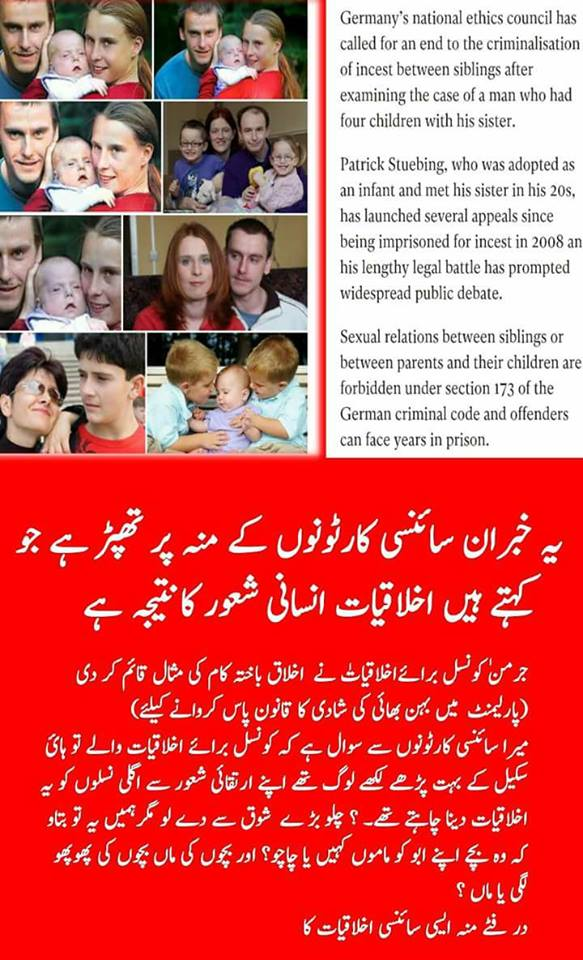

")
آجکل مسلمان ویب سائٹوں پر یہ امیج شیئر ہو رہا ہے:

بنیادی مسئلہ سمجھئے: کیا نیچر "100٪ پرفیکٹ" ہے؟
مذہبی حضرات کا دعویٰ ہے کہَ:
- ان کا اللہ 100٪ پرفکیٹ ہے۔
- چنانچہ اس 100٪ پرفیکٹ اللہ نے جو نیچر بنائی ہے، وہ بھی 100٪ پرفیکٹ ہے۔
- اور اس بنیاد پر وہ انکار کرتے ہیں کہ کوئی شخص "ہم جنس پرستی" کے "فطری جذبات" رکھ سکتا ہے، یا پھر بھائی بہن کبھی بھی ایک دوسرے کی محبت میں فطری طور پر مبتلا ہو سکتے ہیں۔
- اور یہ صرف شیطان ہے جو کہ انہیں بہکاتا ہے، جس کی وجہ سے وہ اپنے ہی ہم جنسوں کی طرف رغبت محسوس کرتے ہیں۔
مگر سچائی یہ ہے کہ مذہبی حضرات کا یہ دعویٰ انتہائی احمقانہ ہے، کیونکہ:
- اگر اپنے ہی کسی ہم جنس کی محبت میں مبتلا ہونا فقط شیطان کے بہکاوے کی وجہ سے ہے، تو پھر ایک مرتبہ "لاحول واللہ قوۃ" پڑھنے پر شیطان کو بھاگ جانا چاہیے، اور ہم جنس لوگوں کی طرف رغبت اور محبت ختم ہو جانی چاہیے۔
- مگرایک مرتبہ "لاحول واللہ قوۃ" تو کیا، یہاں تو پورے قرآن کا ورد کر کے بار بار پھونکتے رہیے تو بھی اپنے ہم جنس کی طرف رغبت اور محبت ختم نہیں ہوتی۔
- اور لاحول اور پورا قرآن کافی نہیں تو پھر اسلام کی وحشیانہ ترین سزائیں بھی آپ نے ہم جنس پرستوں پر آزما کر دیکھ لیں، مگر پھر بھی ہم جنس کی طرح رغبت اور محبت وہیں کی وہیں موجود ہے۔
- یاد رہے کہ ہم جنس پرستی میں مبتلا لوگ اسلامی معاشرے میں رہنے والے مسلمان بھی ہیں، جن میں مدارس کی مولوی بھی شامل ہیں، جو دن رات قرآن بھی پڑھتے ہیں، اور جن کی بیویاں بھی موجود ہیں، مگر اس سب کے باوجود بھی وہ ہم جنس پرستی میں بھی مبتلا ہیں۔
کیا اب بھی آپ اپنے دعوے پر قائم رہیں گے کہ 100٪ پرفیکٹ اللہ کی بنائی ہوئی نیچر بھی 100٪ پرفیکٹ ہے؟
مذہبی حضرات کے برعکس:
- ایتھیئسٹ حضرات: نیچر کو 100٪ پرفیکٹ نہیں سمجھتے۔
- بلکہ نیچر اپنی imperfection کی وجہ سے ہم انسانوں کے لیے کئی طرح کے چیلنجز پیدا کرتی ہے۔
- اور یہ ہم انسانوں کی ذمہ داری ہے کہ ہم نیچر کی طرف سے پیدا کردہ ان چیلنجز کو اپنی انسانی عقل استعمال کرتے ہوئے بہترین طریقے سے حل کرنے کی کوشش کریں۔
- اور اگر پہلی کوشش میں ہم بہترحل پیش نہ کرسکیں، تو پھر ہم اپنے قوانین کو جمود کا شکار نہ ہونے دیں، بلکہ اپنی عقل، تجربے اور مشاہدات کی روشنی میں ہمارے قوانین اور فیصلوں میں ارتقا جاری رہے اور ہم ان میں ریفارمز کر کے بہتر سے بہتر کی طرف کا سفر جاری رکھیں۔
چنانچہ جب غیر مذہبی (ایتھیئسٹ) کمیونٹی نے اپنے معاشرے کا جائزہ لیا، تو ہمیں نیچر کی imperfection کی وجہ سے یہ مسائل نظر آئے:
- rape tendency
- پیڈوفیلیا
- ہم جنس پرستی کی طرف رغبت
- انسیسٹ تعلقات
Tendency towards Rape:
جب ہم نے rape کیسز کا جائزہ لیا، تو اس کی وجہ dominance کی خواہش نظر آئی۔ چنانچہ چاہے dominance کی یہ خواہش کسی انسان میں فطری طور پر موجود ہو، تب بھی ہم نے اس پر مکمل طور پر پابندی لگائی کیونکہ اس سے معاشرے کے کمزور اراکین کو نقصان کا خطرہ تھا۔ اور ہمیں یہ نظر آیا کہ پورے معاشرے کا بہترین مفاد اس میں ہے کہ ریپ اور dominance پر مکمل پابندی ہو، اور معاشرے کے ہر رکن کو (چاہے وہ کمزور ہو یا پھر طاقتور) برابر کے انسانی حقوق دیے جائیں۔
پیڈوفیلیا:
پیڈوفیلیا کے مطالعہ پر سامنے آیا کہ کچھ لوگ dominance کی طرف tendency کی وجہ سے بچوں کو نشانہ بناتے ہیں اور یہ ریپ کے زمرے میں ہی آتا ہے۔ چنانچہ معاشرے کے مجموعی مفاد کی خاطر اس پر پابندی لگائی گئی۔
جبکہ کچھ ایسے کیسز بھی سامنے آئے کہ جہاں یہ دیکھنے میں آیا کہ dominance کا عنصر نہ بھی ہو، تب بھی نیچر کی imperfection کی وجہ سے کچھ لوگ بچوں میں رغبت محسوس کر رہے ہوتے ہیں۔ چنانچہ اگر مان بھی لیا جائے کہ ان لوگوں میں بغیر dominance کے بچوں کی طرف رغبت واقعی فطری ہے، تب بھی ہم نے معاشرے کے مجموعی مفاد کی خاطر ان لوگوں پربچوں سے تعلقات پر مکمل پابندی لگائی۔ اس کی وجہ یہ تھی کہ بچے بھی معاشرے کا رکن ہیں، اور ان کے حقوق کی حفاظت بھی ہماری ذمہ داری ہے۔
ہم جنس پرستی کی طرف رغبت:
ہم جنس پرستی کے کیسز کے لاکھوں کیسز کی مطالعہ کے بعد ہمارا تجربہ اور مشاہدہ بتاتا ہے کہ اس میں کوئی مضائقہ نہیں، بلکہ معاشرے کا مجموعی مفاد اور بہتری یہی ہے کہ ایک دوسرے کی consent سے ایسے تعلقات کی کھل کر اجازت ہونی چاہیے۔ اس سے معاشرے کے اراکین ذہنی طور پر خود کو پُرسکون محسوس کرتے ہیں، اور اس سے کسی دوسرے رکن کے حقوق بھی متاثر نہیں ہوتے ہیں۔
انسیسٹ تعلقات:
نیچر کی imperfection کی وجہ سے بالکل ممکن ہے کہ کچھ استثنائی صورتحال میں بھائی اور بہن ایک دوسرے کی طرف صرف رغبت ہی نہیں، بلکہ ایک دوسرے کی "محبت" میں مبتلا ہو جائیں۔
جرمنی کی کونسل برائے اخلاقیات نے اس کا حل یہ تجویز کیا (لنک):
(1) Incest پر معاشرتی دباؤ کے ذریعے قابو پایا جائے، بہ نسبت اس کے کہ اس پر "سزا" کا اطلاق کیا جائے۔
(2) سزا کی وجہ سے یہ چیز ختم ہونے کی بجائے انڈر گراؤنڈ چلی جائے گی اور لوگ چھپ کر اسے کریں گے۔
(3) اور چھپ کر کرنے کے دوران اگر بچے پیدا ہو گئے تو ایسے بچوں کو اکثر سزا کے ڈر و خوف سے قتل کر دیا جاتا ہے۔ (جیسا کہ ہم پاکستان میں دیکھتے ہیں جہاں بچوں کو یا تو قتل کر دیا جاتا ہے، یا پھر ایدھی سینٹر میں پھینک دیا جاتا ہے)
(4) مغربی اقوام کے نزدیک کزن شادی بھی incest ہی ہے اور اس میں بھی ڈس ایبل بچے پیدا ہونے کے چانسز ہوتے ہیں، خصوصا جب کسی خاندان میں کئی جنریشنز سے کزنز آپس میں شادی کر رہے ہوں۔ لیکن مغربی اقوام نے کزن میرج کو incest سمجھنے کے باوجود اس پر سزا نہیں لگائی، بلکہ وہ اس چیز کو تعلیم اور معاشرتی دباؤ کے ذریعے ہی روکنا چاہتے ہیں۔
اہل مذہب کا یہ الزام کہ ایتھیسٹ انسیسٹ کو فروغ دیتے ہیں، بالکل غلط ہے۔ ہاں یہ ضرور سے ہے کہ ایتھیسٹ ایسے کیسز میں وحشیانہ سزائیں نہیں دیتے جیسا کہ اسلام دیتا ہے کیونکہ ان سزاوؤں سے مسائل حل نہیں ہو سکتے، چاہے یہ incest کا مسئلہ ہو یا پھر ہم جنس پرستی ہو۔ بلکہ ایتھیسٹ معاشرے انسانی عقل کے مطابق ایسے مسائل کو بہترین طریقے سے حل کرنے کی کوشش کرتے ہیں، جو کہ یقینی طور پر اسلامی وحشیانہ سزاوؤں کے نظام سے کہیں بہتر طریقہ کار ہے۔
غیر مذہبی (ایتھیسٹ) معاشروں میں Incest کی روک تھام
ہزاروں سال سے دنیا کے غیر مذہبی معاشروں (بشمول وہ تمام معاشرے جہاں اسلام نہیں پہنچا، مثلا افریقی جنگلات اور پاکستان میں کیلاش کی وادی وغیرہ) میں ماں اور بہنوں اور بیٹیوں سے شادی ممنوع رہی۔ اسکی وجہ انسانی عقل کا وہ مشاہدہ ہے جہاں اس نے یہ دیکھ لیا تھا کہ جب بھی ماں یا بہن بیٹی سے اولاد پیدا ہوتی ہے، تو وہ زیادہ تر بیماریوں کا شکار ہوتی ہے۔ جبکہ دوسرے قبیلوں کی عورتوں سے اولاد تندرست اور توانا پیدا ہوتی ہے۔ چنانچہ کسی آسمانی خدا کی رہنمائی کے بغیر ہی انہوں نے ان رشتوں پر پابندی لگا دی۔ اسکے بعد سائنس نے آ کر تو اس شعور میں اتنا زیادہ اضافہ کر دیا کہ آج کے اتھیسٹ کزن شادی کو بھی Incest ہی مانتے ہیں کیونکہ فرسٹ کزنز بھی اتنے زیادہ مشترکہ جینز شیئر کر رہے ہوتے ہیں کہ جس سے پیدائشی بیمار بچے پیدا ہونے کا خطرہ بہت زیادہ بڑھ جاتا ہے۔
(بلکہ ماضی میں بھی چین اور انڈیا اور دنیا کے دیگر حصوں میں انسان نے اپنے مشاہدے کے بعد کزن شادیوں پر بھی پابندی لگا دی تھی۔ ایک قبیلے یا برادری کے اندر شادی نہیں ہو سکتی تھی، بلکہ وہاں دلہن کو باہر کے قبیلے/برادری سے لایا جاتا تھا)
آج کے غیر مذہبی سیکولر معاشروں کے حقائق کچھ یوں ہیں:
(1) الحادی معاشروں میں انسیٹ کو فروغ نہیں دیا جاتا بلکہ بنیادی طور پر سگے رشتوں میں جنسی تعلق کی حوصلہ شکنی کی جاتی ہے کیونکہ غلطی کرنے سے بچے پیدا ہو سکتے ہیں جو کہ ان بچوں پر ظلم ہے۔ چنانچہ ماضی کے الحادی معاشروں میں اس پر پابندی اور حتیٰ کہ سز ا تک نظر آتی ہے۔ معذور بچے صرف ایک پہلو ہے، اسکے ساتھ ساتھ دیگر نفسیاتی مسائل بھی اس مسئلے کے دیگر پہلو ہیں جن کی وجہ سے انسانی فطرت رہنمائی کرتی ہے کہ اس سے پرہیز کرنا چاہیے (تفصیلات آگے آ رہی ہیں)۔
(2) آج کے ماڈرن دور میں اس مسئلے کے حل کے لیے ایک اہم قدم کا اضافہ یہ ہے کہ ایسے لوگوں کو ماہر نفسیات سے counselling کروائی جاتی ہے۔ انہیں اسکے نقصانات بتائے جاتے ہیں۔ اگر اس طرح انکی مدد ہو سکے تو ہر ممکن مدد کی کوشش کی جاتی ہے۔
(3) لیکن اس counselling کے باوجود بھی اگر وہ اکھٹا رہنا چاہتے ہیں تو اس سلسلے میں مغربی ممالک میں بحث چل رہی ہے کہ اس صورت میں کیا کیا جائے؟ ایک تجویز کے مطابق اس کی روک تھام کے لیے قانونی طور پر بھائی بہن کو شادی کرنے کی اجازت نہ دی جائے تاکہ وہ فیملی اور پھر بچے پیدا کرنے کے متعلق نہ سوچیں۔ دوسری تجویز یہ ہے کہ سیکس کرنے کی حوصلہ شکنی تو کی جائے، لیکن اگر وہ سیکس کر بیٹھیں تو اس پر کوئی قانونی سزا نہ دی جائے، لیکن ان پر بچے پیدا کرنے پو مکمل پابندی ہو۔ اور اگر وہ اس قانونی پابندی کے باوجود آپس کے تعلقات سے بچہ پیدا کرنا چاہیں، تو پھر پھر اس پر قانونی سزا تجویز کی جائے کیونکہ ایسا کرنا بچے کے اوپر ظلم ہے کیونکہ وہ معذور پیدا ہو سکتا ہے۔ چنانچہ اگر انکو ساتھ رہنے کی اجازت دے بھی دی جائے، تب بھی ان پر بچے پیدا کرنے کی پابندی ہی رہے۔ اس ضمن میں انہیں کنڈوم کے استعمال اور دیگر مانع حمل طریقوں سے متعارف کروایا جائے تاکہ یہ غلطی نہ ہو پائے۔ بہرحال، کنڈوم کے ساتھ سیکس بھی آخری مرحلہ ہے، اور پہلے مرحلے میں اس کی حوصلہ شکنی ہے، اور اس پر counselling ہے۔
جبکہ اسلامی معاشروں میں یہ کام پس پردہ چھپ کر ہو رہا ہوتا ہے اور وہاں بھی لوگ بہک کر ایسی حرکتیں کرتے ہیں اور کوئی مذہب انکا راستہ نہیں روک پاتا، لیکن پھر ان پر پردہ ڈال دیا جاتا ہے۔لیکن چونکہ اسلامی معاشرے میں غلطی کرنے والے یہ سگے رشتے دار کہیں سے بھی کوئی پروفیشنل مدد نہیں لے سکتے (مثلا counselling وغیرہ)، چنانچہ اسکا نتیجہ یہ نکلتا ہے کہ وہ ساری زندگی نفسیاتی مریض بنے رہنے پر مجبور ہو جاتے ہیں۔ نہ تو ایسے نوجوانوں کو کنڈوم کا صحیح علم ہوتا ہے، نہ ہی دیگر مانع حمل طریقوں کا، اور ایسے میں اگر بچے پیدا ہو جائیں تو پھر لازمی طور پر ایسے بچوں کو یا تو قتل کر دیا جاتا ہے، یا کوڑے دان میں پھینک دیا جاتا ہے، یا پھر ایدھی سنٹر جیسے اداروں کے سامنے رکھ دیا جاتا ہے۔
- معروف ادارے پاپولیشن کونسل نے رپورٹ شائع کی تھی (لنک) جس کے مطابق سن 2012 میں پاکستانی کلینکس میں 2.25 ملین ابارشن کے کیسز ہوئے۔
- اور پی ٹی آئی کی خاتون وزیر نے رپورٹ پیش کی ہے (لنک) کہ پاکستان میں ریپ کی شکار 82 فیصد بچیوں نے بتایا کہ انکے ساتھ زیادتی باپ،چچا،تایا،دادا،نانا اور ماموں نے کی۔
-
اسلام کا جو "غیر فطرتی" ماحول مدارس کے چھوٹے بچوں کی ریپ کی وجہ بنا ہوا ہے، وہی غیر فطرتی ماحول اسلامی معاشرے میں Incest کے جذبات کی پروان کا باعث ہے۔ اسلامی معاشرے میں گھر کے اندر یہ جنسی فرسٹریشن کبھی رپورٹ نہیں ہوتی، مگر اس کا اندازہ اس بات سے لگایا جا سکتا ہے کہ مملکتِ خداداد اسلامی پاکستان پچھلی ایک دھائی سے بھی زیادہ عرصے سے گوگل سرچ میں sister rape (link) ، mother rape (link)، child sex (link)، donkey rape (link) جیسی اصطلاحات کی سرچ میں پوری دنیا میں پہلے نمبر یا اس کے آس پاس موجود رہا ہے۔
- ایدھی فاؤنڈیشن کو 375 نوزائیدہ بچوں کی لاشیں کچرے کے ڈھیر میں پڑی ملیں۔ یہ اعداد و شمار فقط سن 2019 کے ہیں اور صرف کراچی شہر کے ہیں (ڈان نیوز)۔ (شکرہے کہ پاکستان کے ہزاروں پرائیویٹ کلینکوں میں ہر سال ابارشن کے لاکھوں غیر قانونی آپریشن ہوتے ہیں۔ اگر حکومت ان کے خلاف آپریشن کرتی ہے تو پھر کچرے کے ڈھیروں پر ملنے والے نوزائیدہ بچوں کی تعداد بھی لاکھوں میں پہنچ جائے گی۔ حکومت کو بھی اس کا علم ہے اور وہ اس لیے ان کے خلاف آپریشن نہیں کرتی، اور مذہبی طبقات کو بھی اس کا علم ہے، اس لیے وہ ہسپتالوں میں ہونے والے ان لاکھوں غیر قانونی ابارشن کے آپریشنوں کے خلاف احتجاج نہیں کرتے۔

چودہ سو سال پرانے مذہب نے واحد حل یہ دیا ہے کہ جو ایسی غلطی کر بیٹھیں، انہیں سخت سزا دو اور قتل کر دو۔ لیکن انسانوں کو قتل کرنے سے یہ چیز ختم نہیں ہو سکتی، بلکہ یہ چیز "زیرِ زمین" چلی جائے گی اور چھپ چھپ کر وہ لوگ اس کام کو انجام دیتے رہیں گے۔ اور چونکہ اسلام میں 4 عینی گواہوں کے بغیر کسی کو سزا نہیں ہو سکتی، چنانچہ اس کام کو اسلامی ریاست ظالمانہ خونی سزاؤں کے ذریعے بھی روک نہیں سکتی۔
چنانچہ فرق یہ ہے کہ ملحد معاشروں میں اس ایشو کو بطور مسئلہ تسلیم کیا جاتا ہے، اسے چھپانے کی بجائے اس پر پروفیشنل مدد فراہم کرنے کی کوشش کی جاتی ہے، جبکہ اسلامی و دیگر مذہبی معاشروں میں اس مسئلے کو بطور مسئلہ تسلیم ہی نہیں کیا جاتا اور پہلی کوشش اس پر پردہ ڈالنے کی ہی ہوتی ہوتی ہے۔ اور پھر اسی تنگ نظر ماحول کی وجہ سے انسان ساری زندگی نفسیاتی مسائل کا شکار رہتا ہے، اور بچہ ہو جائے، تو پھر ایسے بچے کی قسمت عموما اسکا قتل ہی ہوتی ہے۔
مذاہب اور انسیسٹ:
قریبی خونی رشتے داروں میں مشترکہ جینز شیئر کرنے کی شرح یہ ہے:
1) والدین/اولاد: 50٪ جینز
2) بہن/بھائی: 50٪ جینز
3) چچا/بھتیجی: 25٪ جنیز (سوتیلے بھائی بہن میں بھی یہ شرح 25٪ ہے)
4) فرسٹ کزنز: 12.5 ٪ جینز (جبکہ ڈبل فرسٹ کزنز میں یہ شرح چچا بھتیجی کی طرح 25٪ ہے۔ یہ ڈبل فرسٹ کزن شادی اسلام میں حلال ہے)
5) سیکنڈ کزنز: 3.125%
امریکہ کی کئی ریاستوں میں کزن شادی پر پابندی ہے، اور حتیٰ کہ اس پر Criminal Offence کے تحت سزا ہے (لنک)۔ وجہ یہ ہے کہ کزن شادی بھی incest ہی ہے۔
اگر واقعی اللہ کا کوئی وجود ہے، تو اس کی غیر دانشمندی دیکھئے کہ:
(1) سب سے پہلے حوا کو آدم کی پسلی سے بنا ڈالا، حالانکہ اس صورت میں وہ incest کی انتہا پر تھے اور 100٪ جینز شیئر کر رہے تھے۔
(2) پھر اسکے بعد آدم کے بیٹے اور بیٹیوں میں incest کروایا، حالانکہ وہ 50٪ جینز شیئر کر رہے تھے۔
(3) اور پھر اللہ نے بنی اسرائیل پر نبیوں کی برسات نازل کی، لیکن اللہ کو اتنی توفیق نہ ہو سکی کہ انہیں بتا سکتا کہ چچا بھتیجی اور ماموں بھانجی سے شادیاں بھی incest ہیں اور وہ 25٪ مشترکہ جینز شیئر کر رہے ہوتے ہیں۔ بنی اسرائیل کے مقابلے میں دیگر معاشروں نے اس عرصے میں دیکھ لیا کہ جب کئی نسلوں تک incest جاری رہتا ہے تو پھر اسکے برے نتائج بڑے پیمانے پر آنے لگتے ہیں۔ چنانچہ انہوں نے تو اس کی روک تھام کی، لیکن یہودی شریعت اسے نہ روک پائی کیونکہ وہاں بھی وہی اسلام والا مسئلہ تھا کہ حلال اللہ قیامت تک تبدیل نہیں ہو سکتا۔
(4) بہرحال عیسائی دیگر معاشروں کے زیر اثر نیا مذہب بنا کر کامیاب ہو گئے کہ کسی طرح اس یہودی قانون سے جان چھڑا پاتے۔
(5) اور کزنز سے شادی بھی incest ہی ہے کیونکہ فرسٹ کزنز 12.5٪ مشترکہ جینز شیئر کر رہے ہوتے ہیں۔ اور اگر شادی Double 1st Cousins میں ہو رہی ہو تو یہ شرح 25٪ فیصد ہو جاتی ہے، اور یہ بھی اسلام میں 'حلال' ہے (یہ بالکل چچا بھتیجی کی شادی کی طرح ہے کیونکہ چچا بھتیجی بھی 25٪جینز ہی شیئر کر رہے ہوتے ہیں)۔
(اس لنک پر طویل لسٹ دیکھئے جہاں بنی اسرائیل کے انبیاء خود اپنی بھتیجیوں سے شادیاں کرتے رہے)